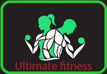

Какво включва една от нашите тренировки?
Загрявка
- Загрявката е изключително важна, защото с нея ще подготвиш сърдечно-съдовата
и нервната си система за предствоящото физическо натоварване. Освен това ще загрееш мускулатурата,
ще стимулираш кръвообращението и ще намалиш риска от контузии, травми и мускулни разкъсвания по време на силовата част.
- Започни загрявката си с леко кардио 5-10 минути. Леко тичане на пътека,
на място или с велоергометър ще свърши работа. Поддържай пулса си на около 60-75% от максималния.
Силова тренировка
- Това ще е основната част от твоята тренировъчна програма – силовите упражнения.
Техния подбор, обем подредба ще зависят много от целта ти, опита ти в залата и редица други фактори.
- Добре е силовата тренировка да не продължава по-дълго от 45-75 минути.
Обикновено 6-12 упражнения са достатъчни, в зависимост от самото съдържание и твоя опит в залата
Кардио
- Кардиото е аеробна тренировка с ниска до средна интензивност, която се характеризира с
ритмичност и монотонно темпо. Най-популярните видове кардио са тичане/ходене, каране на колело/велоергометър
- Правилното място за кардио в тренировката е след силовата част – тогава гликогенът в мускулите вече е изчерпан
и при кардио натоварването, тялото ще започне активно да черпи енергия от мастните си замаси.
Стречинг
- Разтягането (т.нар. стречинг) след силова тренировка също е препоръчително.
Това са вид упражнения, при които постепенно се заема позиция, която провокира разтягането на различните мускулни групи.
- Стречингът намалява мускулната треска след силова тренировка, увеличава гъвкавостта и обхвата на движение на ставите и успокоява сърдечния ритъм.
Най-важното правило е стречингът да се извършва винаги след тренировка, при добре загрята мускулатура.